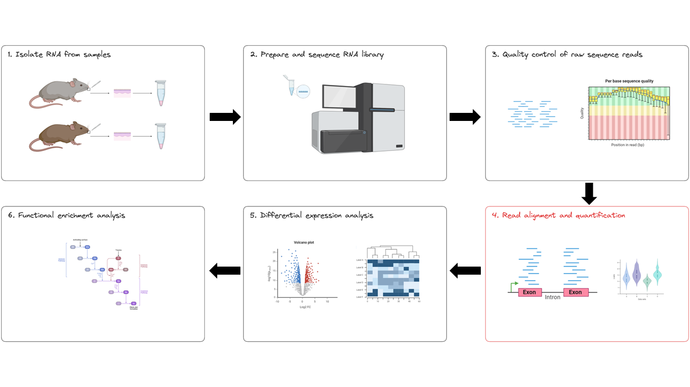
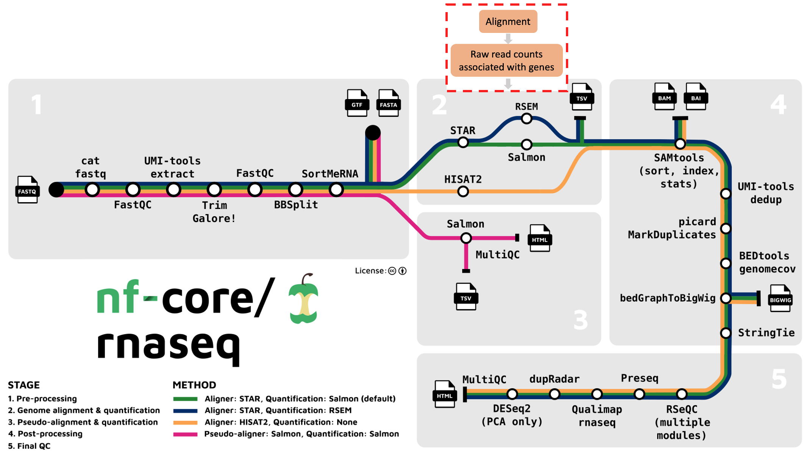
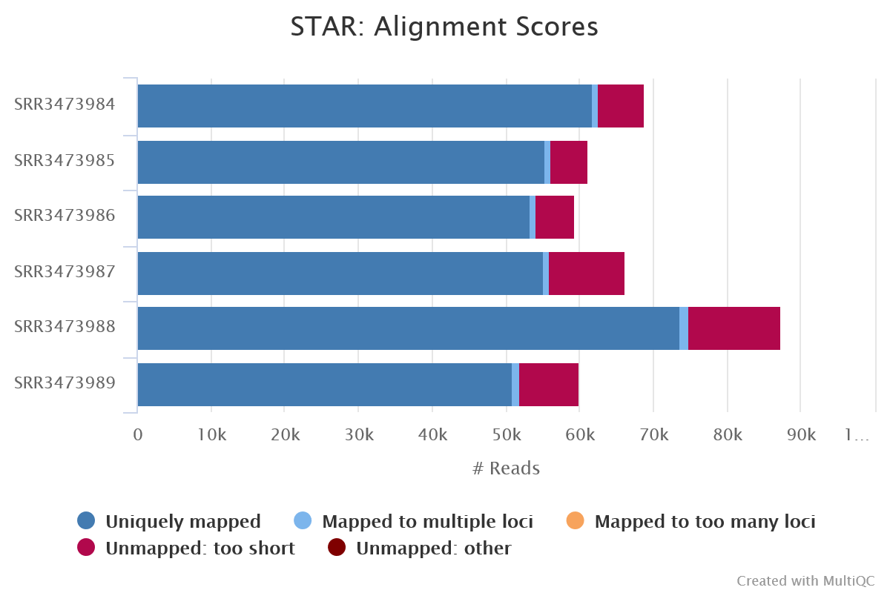
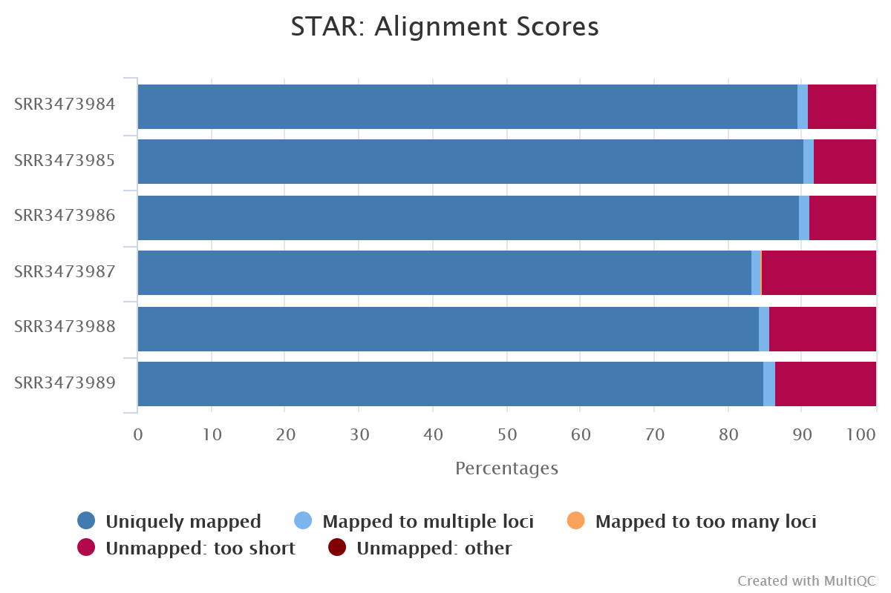

Explore alignment and quantification outputs
- Understand the process of mapping sequencing reads to a reference genome in a splice-aware manner
- Understand how mapped reads are used to quantify gene counts
In this lesson we will explore the outputs of the nf-core/rnaseq pipeline in depth, looking specifically at the results of read alignment and quantification (red box below).

1.4.1 Alignment of reads to a reference genome
The output we will be examining in this lesson is output by the second stage of the nf-core/rnaseq workflow: read alignment and quantification (red box below).

After read trimming, the nf-core/rnaseq pipeline maps reads to a reference genome specified by the user. Keep in mind that RNAseq specific alignment tools are different from whole genome alignment tools. They are designed to be ‘splice aware’, meaning they are capable of differentiating intronic from exonic regions in the alignment process.
Bulk RNA-seq reads are derived from mature mRNA and contain only exons (and no introns). This means a sequence read can span 2 exons. Splice-aware aligners use a reference genome, not a transcriptome to perform read alignment, which contain intergenic, intronic and exonic sequences. This means that when they’re aligned to the reference genome, RNA-seq reads might span large introns. Splice aware aligners know not to align the RNA-seq reads to introns and can align a read across exons.
mRNA splicing is the process by which an mRNA transcript prepares to be translated into an amino acid sequence. It works by removing introns and splicing all exons back together to create a mature mRNA that is transported from the nucleus to the cytoplasm, ready to undergo translation.
The nf-core/rnaseq pipeline offers us various alignment and quantification routes:
- STAR – Salmon
- STAR – RSEM
- HISAT2 – no quantification
Aligned sequences for each sample are output in the bam file format.
The nf-core/rnaseq pipeline has been written in a way where all the files generated from the alignment step onwards (except the summary report) are saved to the same directory as specified by --aligner. In our case, you will find these files in star_salmon.
STAR (Spliced Transcript Alignment to a Reference) is a very popular RNAseq alignment tool. It has previously been shown to be more accurate and efficient than other popular RNAseq alignment tools.
By default, the nf-core/rnaseq pipeline uses picard’s MarkDuplicates to mark the duplicate reads identified amongst the alignments to allow you to guage the overall level of duplication in your samples.
Recall that we applied the --skip_markduplicates parameter. This is because it is not recommended to remove duplicates from RNAseq data because you expect a significant level of true biological duplication that arises from the same fragments being sequenced repeatedly.
➤ Let’s take a look at how our aligner and quantification tools performed. Take a look at the alignment scores in the MultiQC summary report generated by the pipeline, you’ll find it at:
/home/training/Day_1/WBS-mouse-results/multiqc/star_salmon/multiqc_report.html

As expected, our alignments performed well. Most of the reads in all of our samples were uniquely mapped to the mouse reference genome and only small proportion were unmapped.
In breakout rooms, your facilitator will demonstrate how we can visualise alignments using a tool called IGV. Guide your instructor on how to solve the challenge exercise below.
Oh no! We have forgotten to label the conditional groupings of our samples and we don’t know which samples belong to the wildtype and knockout groups!
Can we use the alignment files to assign samples to their correct treatment group?
Hint: From the case study, we know a loss of function mutation of Gtf2ird1 was generated by an insertion of a Myc transgene, resulting in a 40 kb deletion surrounding exon 1.
- Navigate to the gene in the mm10 assembly (chr5:134332897-134481480)
- Samples SRR3473984, SRR3473985, SRR3473984 contain reads covering exon 1. These are wildtype samples.
- Samples SRR3473987, SRR3473988, SRR3473989 DO NOT contain reads covering exon 1. These are knockout samples.
1.4.2 Read quantification
Following read alignment, the nf-core/rnaseq pipeline uses the bam files to calculate raw gene-count data for each sample. We can then use these count files (called a gene-count matrix), to identify differentially expressed genes. By default, the nf-core/rnaseq pipeline runs Salmon for transcript quantification, following alignment by STAR.
Salmon is another popular RNAseq tool, it can take a set of target transcripts to perform quantification. The primary output of Salmon is the quantification results, and these results are provided in different formats and levels of aggregation.
➤ Take a look at the Salmon outputs for a single sample, SRR3473984:
ls -lah /home/training/WBS-mouse-results/star_salmon/SRR3473984total 248K
drwxrwxr-x 5 training training 4.0K Sep 29 03:46 .
drwxrwxr-x 17 training training 4.0K Sep 29 03:55 ..
drwxrwxr-x 2 training training 4.0K Sep 29 03:46 aux_info
-rw-rw-r-- 1 training training 265 Sep 29 03:46 cmd_info.json
drwxrwxr-x 2 training training 4.0K Sep 29 03:46 libParams
drwxrwxr-x 2 training training 4.0K Sep 29 03:46 logs
-rw-rw-r-- 1 training training 49K Sep 29 03:46 quant.genes.sf
-rw-rw-r-- 1 training training 172K Sep 29 03:46 quant.sfNote the quant.sf and quant.genes.sf files. quant.sf provides quantification at the transcript level. That is, each row in this file corresponds to a specific transcript, and the reported quantities are the estimated abundances of these transcripts.
quant.genes.sf provides quantification at the gene level. That is, the abundances of individual transcripts are aggregated to their respective genes, and each row corresponds to a gene. This aggregation is useful for downstream analyses that require gene-level, rather than transcript-level, quantifications.
Merged, multi-sample count matrix files (tab separated values or TSV format) for both gene and transcript level counts are also produced by the workflow.
These raw counts are not a simple count of depth of reads, there is a lot more to consider and each tool does this slightly differently (e.g. how do you count reads spanning overlapping exons across two different genes?). See the Salmon documentation for how Salmon does it - this count is an estimation.
When to use quant.sf vs quant.genes.sf
If you are interested in differential transcript usage, alternative splicing, or transcript-level analyses, you would use the quant.sf file.
If you are performing gene-level differential expression analysis, pathway analysis, or other analyses that operate on a gene-centric level, the quant.genes.sf would be more appropriate.
Can you identify the final gene count matrix files created by STAR and Salmon in the nf-core/rnaseq pipeline output?
The count matrix files can be found here: WBS-mouse-results > star_salmon > salmon.merged.gene_counts.tsv. Most genes will have 0 counts because we subset the data.
- A variety of methods for read alignment and transcript quantification are available in the nf-core/rnaseq pipeline.
- Splice aware alignment tools like HISAT2 and STAR must be used when aligning RNA-seq reads to a reference genome.